授权实景图
授权实景图
大鹏所城
大鹏所城位于大鹏街道鹏城社区，明清海防城门、将军第、街巷和仍在生活的社区共同保存深圳东部军事与移民史，博物馆只是其中一部…
DISTRICT GUIDE · 39 PLACES
海防古城、古火山、天文台、古村与长海岸集中在深圳最远的东部。
SMALL PICKS
坝光银叶树湿地园、沙鱼涌和鹤薮古村比热门沙滩安静，但交通、天气和开放边界更需要提前确认。
ALL PLACES
授权实景图
大鹏所城位于大鹏街道鹏城社区，明清海防城门、将军第、街巷和仍在生活的社区共同保存深圳东部军事与移民史，博物馆只是其中一部…
 编辑配图·非现场实景
编辑配图·非现场实景
大鹏半岛国家地质公园位于南澳新大，古火山地貌、海岸山体和地质博物馆构成科学教育体系，但主峰与鹿雁科考线封闭，公园不等于可…
 编辑配图·非现场实景
编辑配图·非现场实景
深圳市天文台位于西涌山海之间，气象与天文业务场所、山海步道和观测设备构成免费预约参观，名额、步行坡度和天气共同决定能否成…
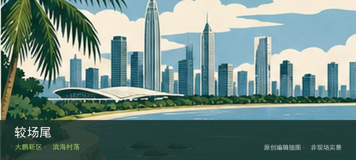
编辑配图·非现场实景较场尾位于大鹏所城南侧，民宿村巷、浅海岸线和餐饮商业构成高密度滨海社区，体验重点在村落与海边公共空间而非安静自然海滩。若…
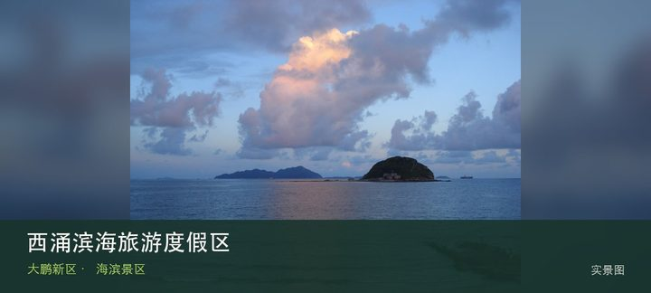
授权实景图西涌滨海旅游度假区位于南澳西涌，长沙滩、划定泳区、天文台接驳与分入口运营形成复杂滨海目的地，票务和海况必须同时确认。把注…
东涌海滩位于南澳东涌，山谷入海形成相对自然的海湾，岸线运营、风浪和交通承载有限，旧有东西涌穿越线不能作为默认玩法。先辨认…
桔钓沙位于南澳新大，细沙海湾、度假设施和帆船活动按经营边界组织，入口、票务和停车可能与周边酒店或基地联动。先辨认桔钓沙弧…
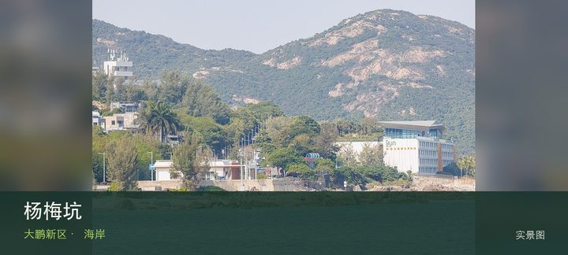
授权实景图杨梅坑位于南澳东部海岸，溪谷入海、沿海道路和通往鹿嘴方向的山海景观吸引大量客流，道路承载和天气会直接改变接驳方式。把注意…
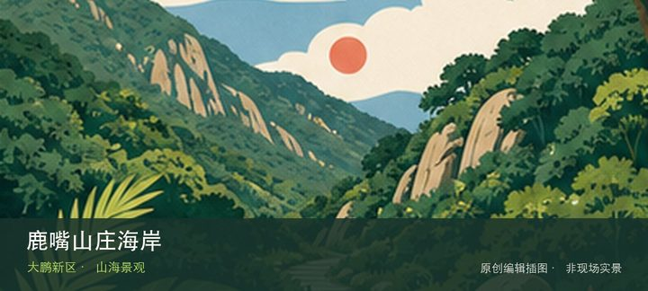
编辑配图·非现场实景鹿嘴山庄海岸位于杨梅坑东端，悬崖海岸、山海步道和度假运营空间位于道路末端，接驳、边坡和风浪使到达比普通滨海公园更受限制。…
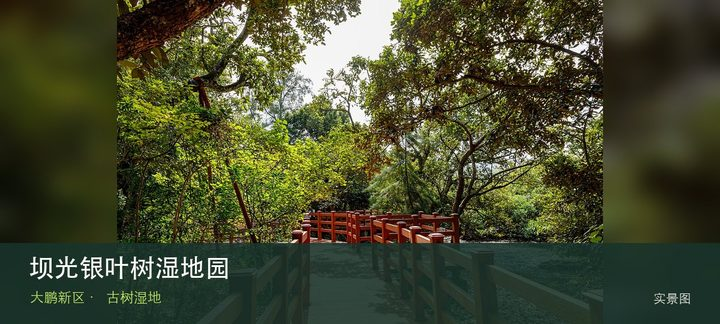
授权实景图坝光银叶树湿地园位于葵涌坝光，古银叶树群、滨海湿地和坝光村落记忆组成珍贵生态空间，树木根系与潮间带都需要保持距离。这处地…
沙鱼涌位于葵涌东部海湾，古村巷、东江纵队北撤史迹和小海湾在短距离内相连，历史线比单纯沙滩打卡更完整。现场的空间线索集中在…
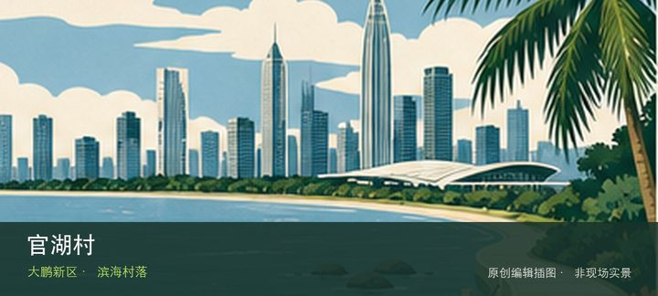
编辑配图·非现场实景官湖村位于葵涌官湖社区，民宿、咖啡店、村巷和社区海岸形成生活化滨海聚落，旺季噪声、垃圾与停车压力比景观本身更突出。这处地…
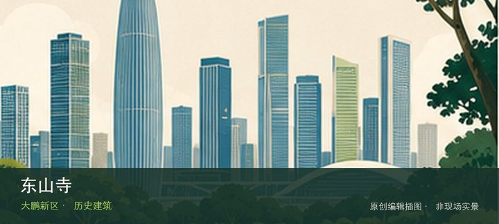
编辑配图·非现场实景东山寺位于大鹏所城东侧山坡，寺院建筑、礼佛空间与俯瞰所城的山坡位置构成人文节点，参观重点是礼仪和空间秩序而非打扰宗教活动…
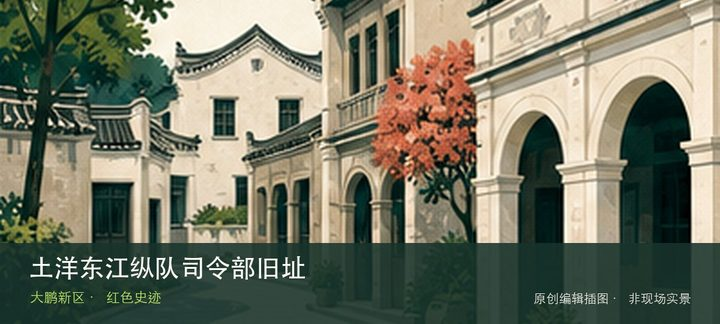
编辑配图·非现场实景土洋东江纵队司令部旧址位于葵涌土洋社区，旧址建筑与史料指向东江纵队指挥活动，可与沙鱼涌北撤纪念地组成一条有时间顺序的革命…
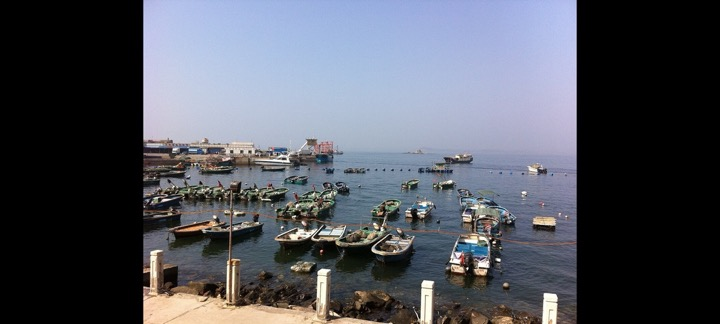
编辑配图·非现场实景南澳月亮湾位于南澳墟镇，渔港、渔船、市场与山海背景呈现仍在运转的生产海岸，观看日常比追求洁净沙滩更符合现场。把注意力放在…
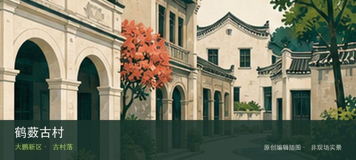
编辑配图·非现场实景鹤薮古村位于西涌腹地，传统村屋、巷道和田园位于热门海滩背后，仍有居民生活，价值在理解滨海聚落而非把村子当免费停车场。这处…
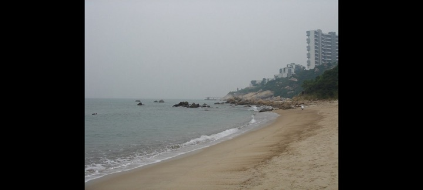
编辑配图·非现场实景玫瑰海岸位于葵涌海岸，婚纱摄影景观、沙滩和经营项目构成付费海滨景区，人工布景与自然海岸需分别看待。这里不是只有一个打卡点…
金沙湾位于大鹏湾东岸，沙滩、度假项目与持续建设运营交织，名称可能对应不同阶段产品，最新公众入口和票务必须先核对。先辨认金…
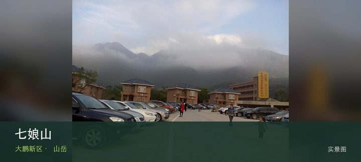
授权实景图七娘山位于南澳新大地质公园，七娘山是大鹏半岛古火山地貌核心和深圳第二高峰，但主峰与鹿雁科考线全线封闭，不能作为登山目的地…
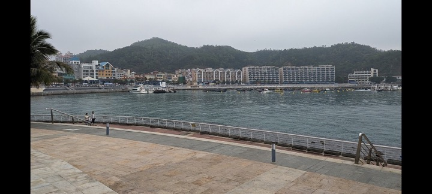
编辑配图·非现场实景大鹏滨海绿道位于大鹏新区多段海岸，绿道名称覆盖多个并不连续的开放海岸段，台风修复、工程和运营边界会让旧轨迹随时失效。这处…
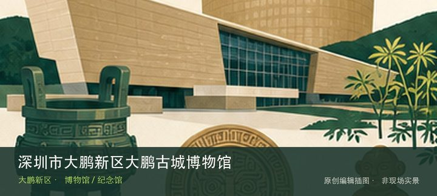
编辑配图·非现场实景深圳市大鹏新区大鹏古城博物馆位于大鹏所城赖府巷，通过海防制度、将军家族与所城居民生活解释古城，不同馆舍和旧宅共同构成分散…
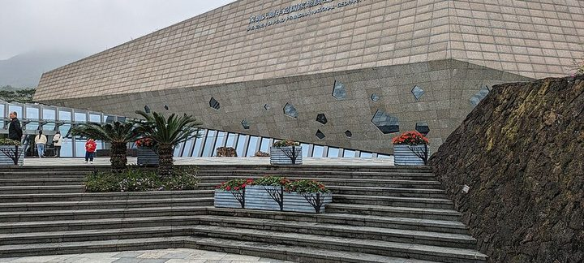
编辑配图·非现场实景深圳大鹏半岛国家地质公园博物馆位于南澳新大地质公园景区，以古火山、海岸地貌、岩石矿物和生命演化为主线，是科考线封闭期间仍…
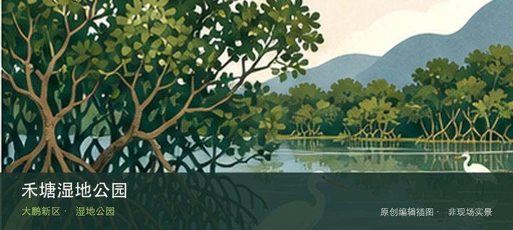
编辑配图·非现场实景禾塘湿地公园位于南澳新东路与碧东路交会处，近19公顷湿地公园以山海之间的水生植物、塘田景观和社区慢行提供南澳内湾的生态观…
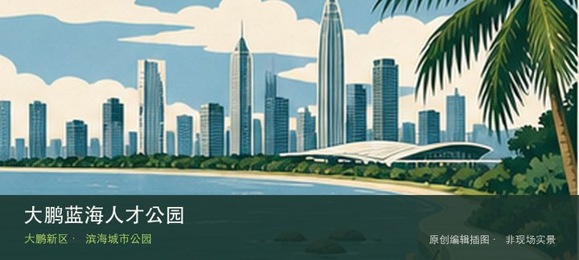
编辑配图·非现场实景大鹏蓝海人才公园位于坝光片区海心路，约18公顷滨海公园以坝光湾、开阔草地和人才主题公共艺术展现新区产业海岸。这里不是只有…
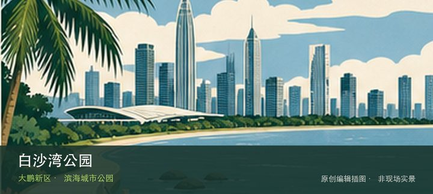
编辑配图·非现场实景白沙湾公园位于坝光展厅至惠州小桂方向，坝光西端的海湾公园连接展厅、滨海步道与跨城海岸视野，也是长线远足的分段入口。从白沙…
王母墟位于大鹏街道王母社区，首批历史风貌区保留大鹏半岛腹地的墟镇街巷、商贸建筑与社区生活，可与所城路线区分阅读。这处地点…
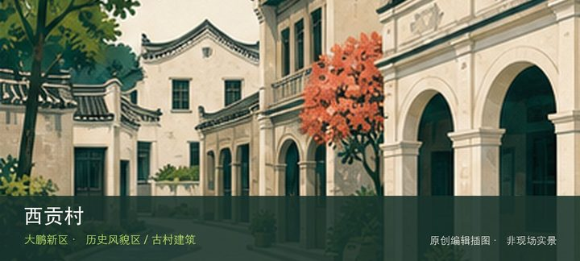
编辑配图·非现场实景西贡村位于南澳街道西贡片区，海岸村落的旧巷、民居和渔业生活记录大鹏半岛与香港西贡之间的历史地缘联系。现场的空间线索集中在…
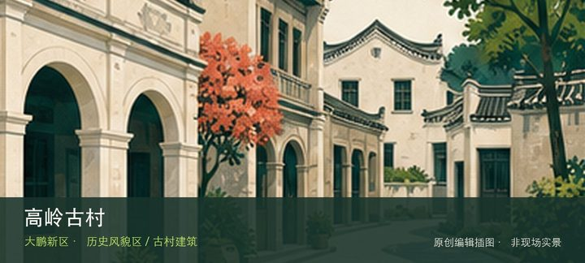
编辑配图·非现场实景高岭古村位于南澳街道高岭片区，山海之间的传统村落以石屋、旧巷和坡地聚落关系形成不同于沙滩景区的历史景观。这里不是只有一个…
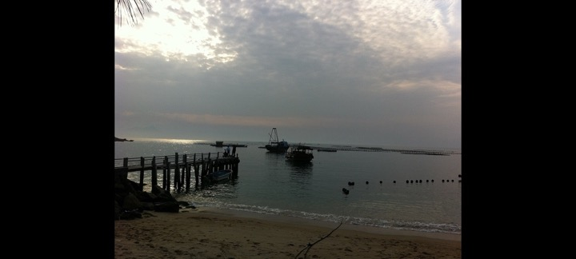
编辑配图·非现场实景鹅公村位于南澳街道鹅公片区，偏远海岸村落保留传统民居、山径和小海湾关系，到访必须以当天道路与公共开放边界为先。这里不是只…
南澳墟位于南澳街道墟镇片区，老墟街道、渔港商业和传统建筑共同记录南澳从海防渔村到旅游节点的演变。现场的空间线索集中在南澳…
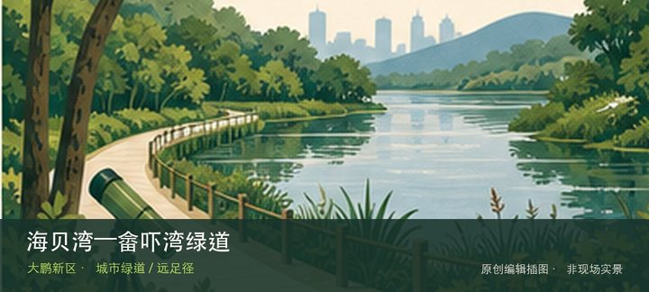
编辑配图·非现场实景海贝湾—畲吓湾绿道位于海贝湾沙滩至畲吓湾，约3.5公里海边慢行线通常07:00—18:00开放，以码头、观海平台和近岸岛…
新东绿道位于新东路西入口至鹿咀山庄，约12公里的滨海特色线路以蓝色路面、七娘山和鹿咀海景组织骑行与徒步体验。把注意力放在…
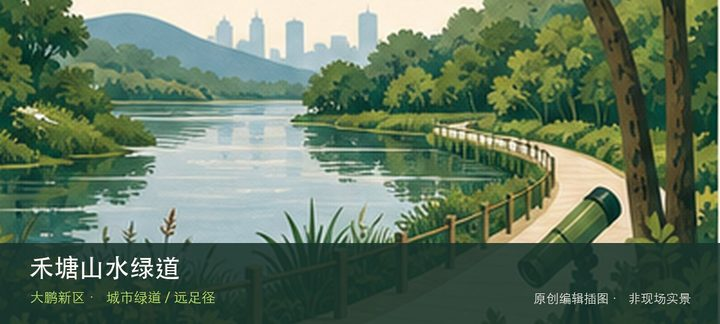
编辑配图·非现场实景禾塘山水绿道位于金岭路后山至奔康工业区，约3公里的生态康养线路通常07:00—20:00开放，以亚公岭、管委会后山和丰树…
鲲鹏径位于凤凰山飞云顶至七娘山大雁顶的跨区山海长线，约200公里、20段的深圳远足主线串联山岭、森林、湖泊、溪涧与海岸，…
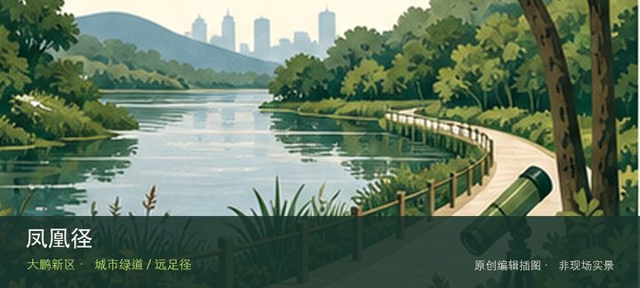
编辑配图·非现场实景凤凰径位于凤凰山至马鞍山的跨区山林长线，约80公里、6段的跨区远足径串联凤凰山、石岩湿地、观澜森林、光明森林和罗田森林等…
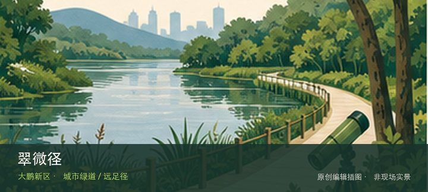
编辑配图·非现场实景翠微径位于坪山与龙岗山水文化节点之间，约46公里、4段的远足径把马峦山、燕子湖、坪山文化设施与清林径水库放进同一跨区体系…
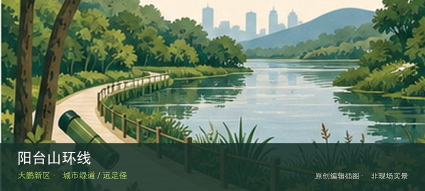
编辑配图·非现场实景阳台山环线位于胜利大营救广场起终点，跨龙华、宝安和南山，约38.5公里的挑战级环线串联阳台山主脊、山石景观与多处水库，只…
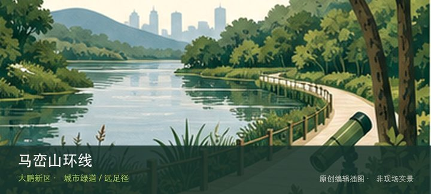
编辑配图·非现场实景马峦山环线位于梅沙湾公园起终点，跨坪山、盐田和大鹏，约38.5公里的山海环线穿过溪瀑、林地、村落和海岸视野，台风雨季必须…
三水线位于白沙湾公园至水祖坑，约18公里、累计爬升高的经典穿越线经过连续山峰，是需要完整补给、导航和退出方案的挑战路线。…